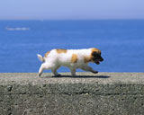

子犬の部屋
かわいい子犬たちの写真
| トップページ | 子猫写真 | 子犬写真 |
 |
| 子犬たちの写真です！ |
| 子犬の魅力は、なんといっても、そのかわいらしさです。子犬は生後1ヵ月で歩き始め、そして2ヶ月で離乳、兄弟とのつきあいを学び始めます。3ヶ月で外世界、群れ、犬どうしのコミュニケーションなど社会性形成されると言われています。かわいい子犬たちですが、育て方で暑さ、寒さには注意が必要です。寒さに関しては人間が耐えれる位ならば大丈夫ですが、暑さにはは弱いので気をつけましょうね。 |
子犬 写真ピックアップ
| お友達と お花畑からお友達同士でこちらを見つめています。なにか珍しいものでも見るような顔つきをしていますね。 |
|
|  | 海辺をお散歩 トコトコ、トコトコ。海岸沿いを、お散歩中です。好奇心旺盛な子犬たちは、放っておくと、どこにでも行ってしまいそうですね。今日は、誰か知り合いに合えるかな？ |
| すやすやお昼ね 散歩や遊びで疲れたら、子犬たちはいつでもお昼寝をします。この子は、お行儀よく布団のなかで寝ているようです。どんな夢を見ているのでしょう･･･？ |